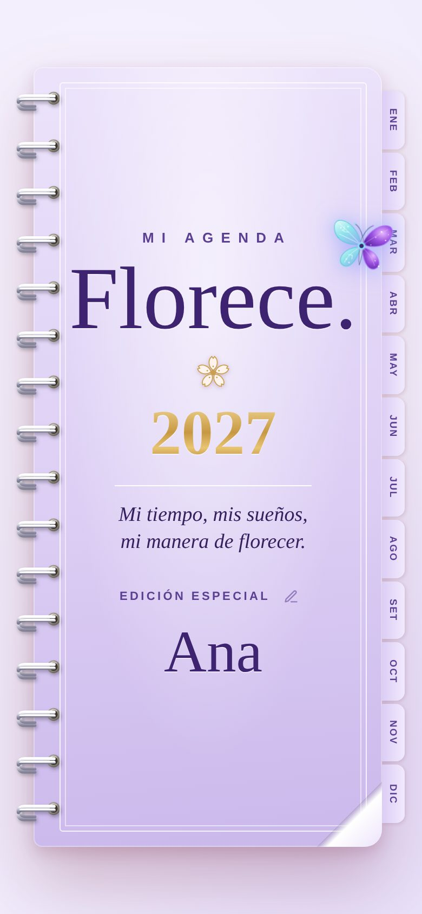
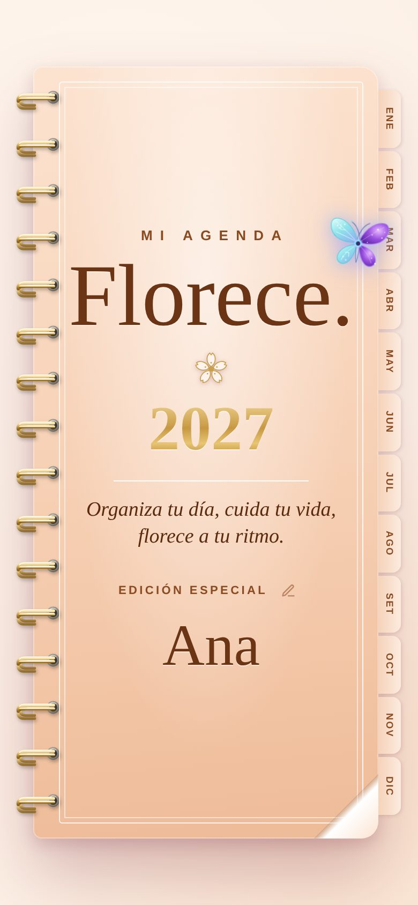
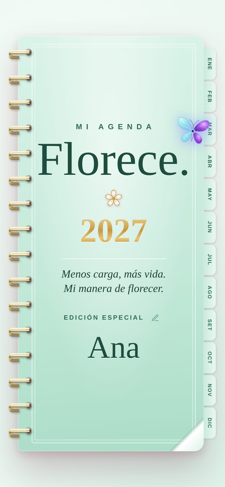
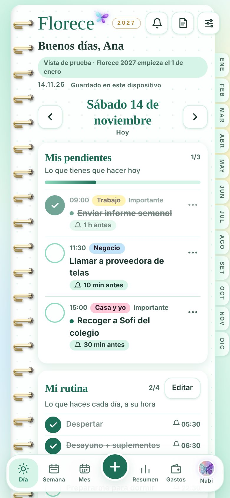
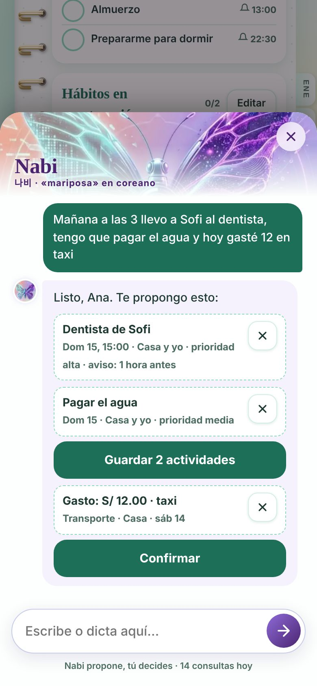
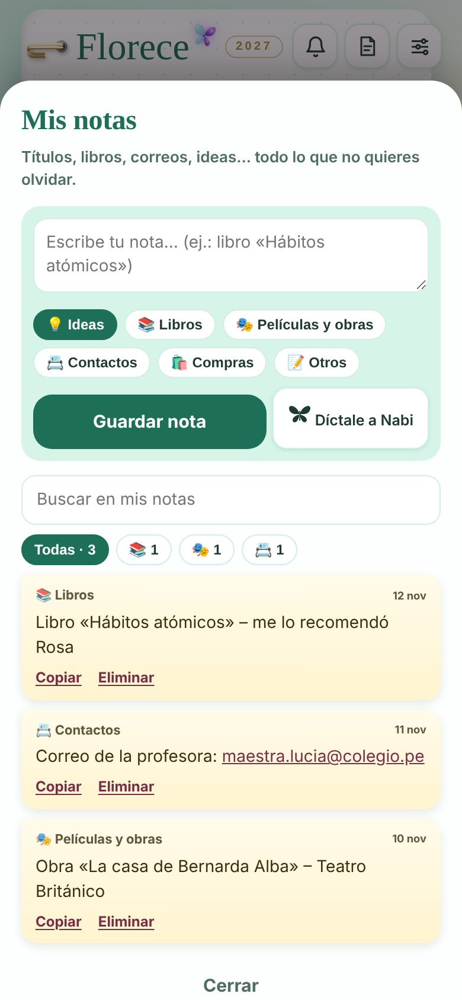
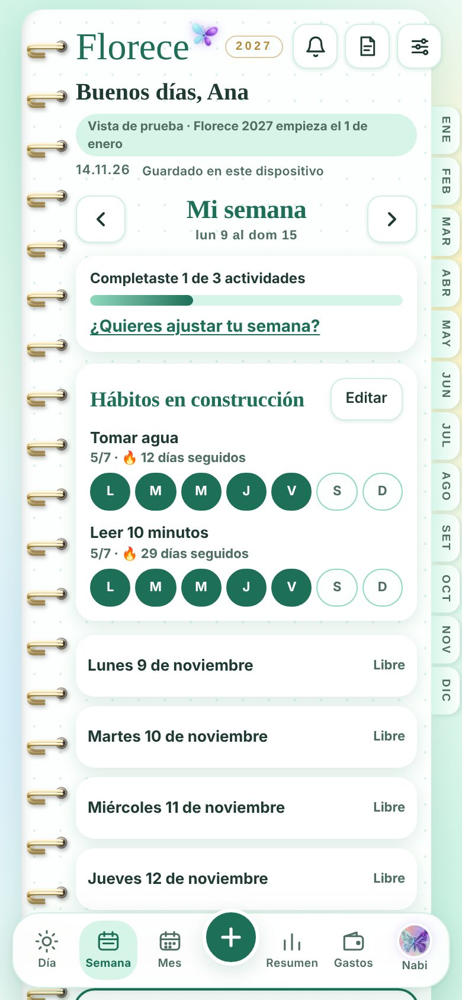

Guía de uso · Mi agenda
Florece.
Tu agenda que se organiza hablando
Trabajas, emprendes, llevas tu casa… y todo vive en tu cabeza. Florece es la agenda que te escucha: le cuentas tu día a Nabi, tu asistente, y ella lo ordena por ti. Tú solo confirmas.




Empezar te toma un minuto
- Abre tu agenda
Toca la portada y se abre como un libro. La primera vez eliges tu color y escribes tu nombre.
- Cuéntale tu día a Nabi
Toca la mariposa de abajo y escríbele o díctale, como a una amiga: «mañana a las 3 llevo a Sofi al dentista».
- Confirma y listo
Nabi te muestra lo que entendió. Si está bien, tocas Confirmar y queda en tu agenda, con su aviso.
Tu día
¿Te pasa?Tienes mil cosas en la cabeza y, al final del día, sientes que algo se te pasó.
Todo tu día, en un solo lugar
Florece separa tu día en cuatro partes para que nada se mezcle y lo veas de un vistazo.
- Mis pendientes: lo que tienes que hacer hoy, con su hora y su color: amarillo es Trabajo, azul es Negocio y rosado es Casa y yo.
- Mi rutina: lo que haces todos los días a la misma hora, como despertar o almorzar, con alarma si quieres.
- Hábitos en construcción: los hábitos nuevos que estás formando.
- Mi momento: unos minutos para ti: cómo dormiste, tu energía, tu gratitud y yoga facial.
Tocas el circulito para marcar algo como hecho. Con los tres puntitos ⋯ puedes reprogramar, editar o eliminar.


Tu asistente
¿Te pasa?No tienes tiempo de sentarte a organizar tu agenda.
Cuéntaselo a Nabi y ella lo ordena
Escríbele o díctale como a una amiga, todo junto y sin orden. Nabi, que significa «mariposa» en coreano, separa tus pendientes, tus gastos y tus notas.
- Tú tienes la última palabra: Nabi te muestra lo que entendió, quitas con la ✕ lo que no quieras y tocas Confirmar.
- ¿Tu agenda está desordenada? Pídele «revisa mi agenda» y te dice qué está mal ubicado o qué día está sobrecargado.
- ¿Tienes la cabeza llena? Haz una descarga mental: le sueltas todo y ella lo acomoda.
- ¿Se te pasó la hora de algo? «Reacomoda mi día» lo mueve a tus espacios libres o a mañana.
- Puedes hablar con ella 15 veces al día. En el celular, díctale con el micrófono de tu teclado.
Avisos
¿Te pasa?Anotas las cosas… y aun así se te olvidan.
Post-its que te recuerdan a tiempo
Cuando llega la hora, aparece un post-it de color en tu agenda. Desde ahí mismo lo marcas como hecho o lo mueves.
- Buenos días: al abrir tu agenda, Nabi te cuenta qué tienes hoy.
- ¿Pudiste hacerlo? 30 minutos después de una actividad, Nabi te pregunta, sin presión.
- Cierre del día (8 p. m.): decides con calma qué hacer con lo que quedó. Mañana es otra oportunidad.
- Tus gastos de hoy (9 p. m.): un recordatorio para anotar lo que gastaste.
- Domingo: Nabi revisa tu semana contigo y te ayuda a ordenar la siguiente.
En esta versión de prueba, los avisos aparecen mientras tienes la agenda abierta. La campanita de arriba muestra todos los avisos del día.


Hábitos en construcción
¿Te pasa?Empiezas a tomar agua o a leer con muchas ganas… y a la semana ya lo dejaste.
Nabi te acompaña hasta que el hábito sea tuyo
Aquí no anotas lo que ya haces. Eliges hasta 3 hábitos nuevos y Nabi te los recuerda, con cariño y con insistencia, hasta que salgan solos.
- Creemos juntas tu hábito: 4 pasos sencillos. Qué hábito, cuántas veces al día, después de qué lo harás y cada cuánto te recuerdo.
- ¿Un día difícil? Usa tu versión mínima: leer 1 página también cuenta y no rompe tu racha.
- ¿Fallaste dos días? Nabi te dice «no me abandones este hábito 👀» y te ayuda a retomar.
- A los 66 días te gradúas: el hábito ya es parte de ti y vive en tu jardín de mariposas.
Mis gastos
¿Te pasa?Llega fin de mes y te preguntas: ¿en qué se me fue el dinero?
Descubre tus gastos hormiga con Nabi
Un taxi por aquí, una gaseosa por allá… los gastos pequeños son los que más se esconden. Díctale a Nabi lo que gastas cada día, hasta el caramelo, y descubran juntas a dónde se va tu dinero.
- Tus gastos hormiga, al descubierto: dulces, gaseosas y snacks juntos. Ver «S/ 9.50 este mes, S/ 114 al año» ya te hace pensar.
- En qué se fue tu dinero: por categorías y en detalle, por ejemplo «taxi, 5 veces, S/ 42».
- Pagos fijos sin sustos: luz, internet, colegio o cuotas, con aviso un día antes.
- Nabi nota lo raro: si la luz sube tres meses seguidos, te avisa.
- Cierre del mes: cuánto gastaste frente al mes anterior y dos ideas concretas para ahorrar.
- Tus ingresos son tuyos: no te los pedimos. Tú sabes cuánto ganas; Florece te ayuda a ver en qué gastas.
Nunca guardes números de cuenta ni de tarjeta en tu agenda.


Mis notas
¿Te pasa?Te recomendaron un libro buenísimo… y ya no te acuerdas del nombre.
Tus notas, siempre a la mano
El título de un libro, el correo de la profesora, una obra de teatro o esa idea que se te ocurrió en el bus. Toca la hojita de arriba o díctale a Nabi: «anota el libro que me recomendó Rosa».
- Ordenadas por categoría: Ideas, Libros, Películas y obras, Contactos, Compras y Otros.
- Encuéntralas en segundos con el buscador y los filtros.
- Nabi se acuerda por ti: pregúntale «¿cuál era el libro que me recomendó Rosa?» y lo busca en tus notas.
Semana, Mes y Resumen
¿Te pasa?Las agendas te hacen sentir culpable por todo lo que no cumpliste.
Mira tu avance, sin culpa
Florece te muestra lo que lograste, sin notas ni calificaciones, y te ayuda a ajustar lo que quedó.
- Semana: tus días y tus hábitos de lunes a domingo, con «¿Quieres ajustar tu semana?» si algo quedó pendiente.
- Mes: un calendario con puntitos de color en los días con actividades.
- Resumen: tu mejor semana, lo que más postergas y el cierre de mes con cuatro preguntas: qué logré, qué me costó, qué suelto y mi intención.

La barra de abajo
Siempre visible, para moverte con un toque.
Frases para decirle a Nabi
Toca una para copiarla y pégala en Nabi.
Preguntas frecuentes
¿Dónde se guardan mis datos?
En tu cuenta. Arriba verás «Todo guardado» cuando se guarda en tu cuenta, o «Guardado en este dispositivo» si se guarda solo en tu celular.
¿Me llegan los avisos con la agenda cerrada?
En esta versión de prueba, los avisos salen mientras tienes la agenda abierta. En la versión final llegarán a tu celular aunque esté cerrada.
¿Nabi puede borrar o cambiar cosas sola?
No. Nabi solo propone. Nada se guarda, cambia ni se borra hasta que tú tocas Confirmar.
¿Por qué no me pide mis ingresos?
Porque cada mujer sabe lo que gana. Florece se enfoca en lo que más ayuda: descubrir en qué gastas cada día.
¿Cuántas veces puedo hablar con Nabi?
Hasta 15 consultas al día. El contador aparece debajo de la barra para escribir.
¿Puedo cambiar el color o mi nombre?
Sí, en Ajustes. Hay cuatro ediciones: Rosa Florece, Lavanda de luna, Durazno dorado y Menta de hada. Tu nombre aparece en la portada.
¿Qué hago si me equivoco o quiero empezar de nuevo?
Cada actividad se edita o elimina con los tres puntitos ⋯. En Ajustes está «Empezar de cero», que pide confirmar dos veces y conserva tu nombre y tu color.
Una agenda para acompañarte en cada etapa
La mariposa no nace volando: es huevo, oruga y crisálida antes de volar. Florece te acompaña paso a paso, en tus días buenos y en tus pausas.
Vuela, mariposa.